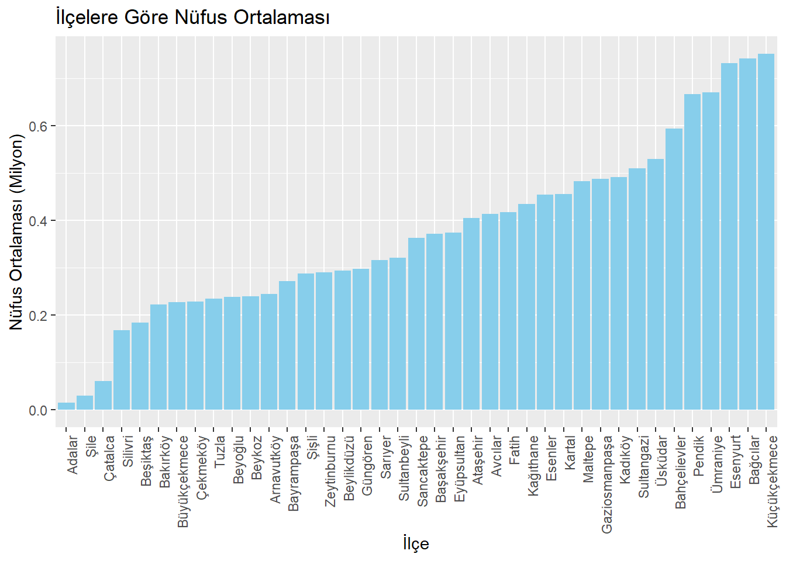
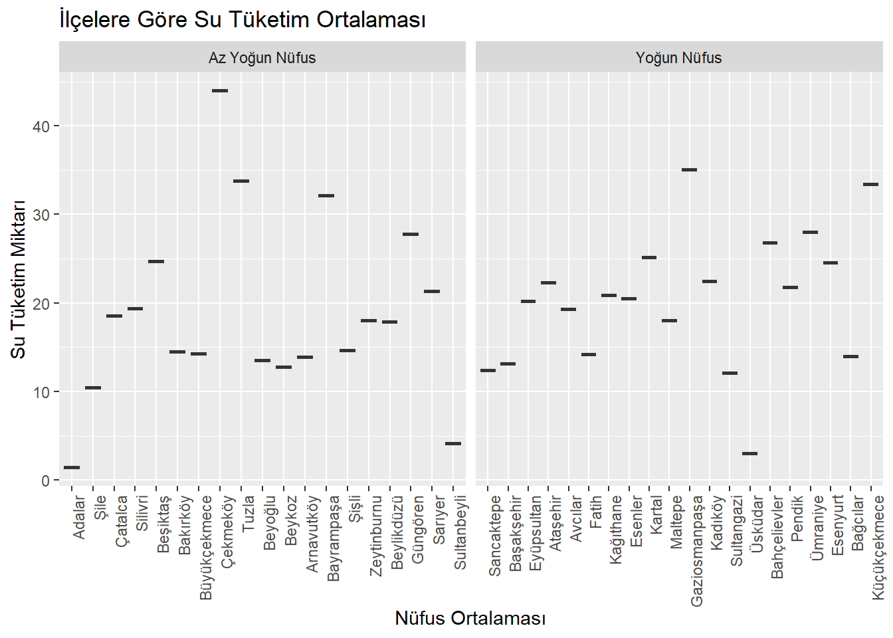
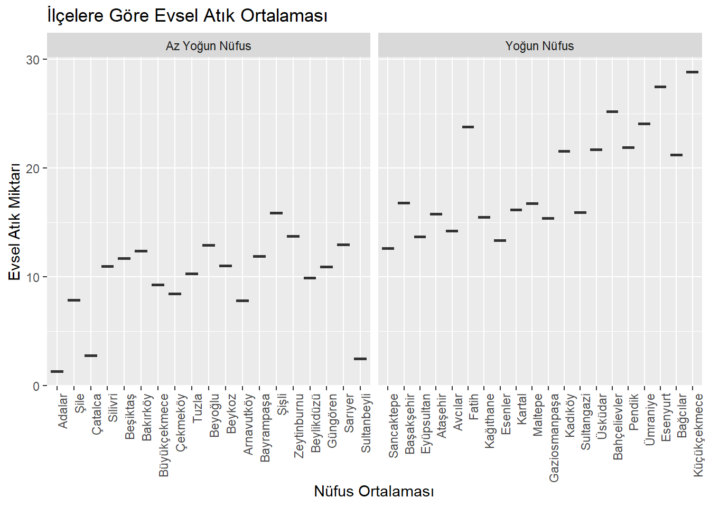
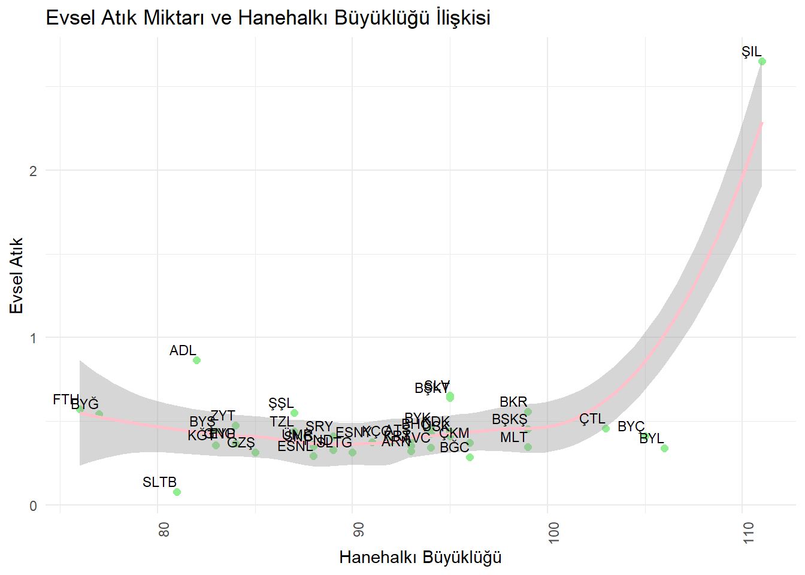

İSTANBUL’DA SÜRDÜRÜLEBİLİRLİK HARİTASI: NÜFUS, EVSEL ATIK VE KAYNAK TÜKETİMİ ANALİZİ
1 Projeye Genel Bakış ve Kapsam
Kaynaklar ve atıklar, birarada yaşayan insanlar için tüketimi ve yönetimi önemli iki unsurdur. İstanbul genelinde ilçe bazlı olarak İstanbul Büyükşehir Belediyesi 2008 ve sonrası için su tüketimi, doğalgaz tüketimi ve ortaya çıkan evsel atık miktarını veri olarak paylaşmaktadır. Ayrıca ilçe bazlı olarak diğer bazı istatistikler de tutulmuştur. Bu projede amaç, kişi başına düşen su ve doğalgaz tüketimi ile ortaya çıkan evsel atık miktarının diğer bazı ilçe bazlı istatistiklerle ilişkilerini gözlemlemek ve ilişkiler üzerine tartışmaktır.
2 Veri Okuma ve Düzenleme
Veri analizi sürecinde, farklı Excel dosyalarından verileri okumak ve bu verileri tek bir düzenli veri çerçevesinde toplamak sağlıklı bir analiz süreci yürütmek açısından önemli bir adımdır. Bu proje kapsamında, veri setlerindeki veriler farklı Excel dosyalarından okunup düzenlenerek, tek bir veri çerçevesi oluşturulmuştur. Oluşturulan bu veri çerçevesinde, parametreler sütunlarda ve ilçeler satırlarda yer almaktadır
Veri analizi sürecinde, su ve doğalgaz tüketimi ile evsel atık miktarını görselleştirerek anlamlı çıkarımlar elde edebilmek amaçlanmıştır. Bu görselleştirmelerle, çeşitli ilçelerdeki tüketim ve atık miktarlarını karşılaştırmak ve bu veriler arasındaki olası ilişkileri incelemek amaçlanmıştır.
Code
#İlçeler ve nüfus ortalamalarıproje_data_sorted <- proje_data[order(proje_data$nüfus_ortalaması, decreasing =TRUE), ]ggplot(proje_data_sorted, aes(x =reorder(İlçe, nüfus_ortalaması), y = nüfus_ortalaması/10^6)) +geom_bar(stat ="identity", fill ="skyblue") +labs(title ="İlçelere Göre Nüfus Ortalaması", x ="İlçe", y ="Nüfus Ortalaması (Milyon)") +theme(axis.text.x =element_text(angle =90, hjust =1))

Code
# İlçelere göre su ve doğalgaz kullanımı ve evsel atıkggplot(proje_data, aes(x = İlçe)) +geom_point(aes(y = kişi_başı_su_tüketim_miktarı, color ="Su Tüketimi (m^3)"), position ="dodge", size =1) +geom_point(aes(y = kişi_başı_dogalgaz_tüketim_miktarı, color ="Doğalgaz Tüketimi (m^3)"), position ="dodge", size =1) +geom_point(aes(y = kişi_başı_atık_miktarı*100, color ="Evsel Atık (10 kg)"), position ="dodge", size =1)+labs(title ="İlçelere Göre Kişi Başı Su ve Doğalgaz Tüketimi ve Evsel Atık Miktarı Karşılaştırması", x ="İlçe", y ="Kişi Başına Miktar", color ="Tüketim Türü") +scale_color_manual(values =c("Su Tüketimi (m^3)"="blue", "Doğalgaz Tüketimi (m^3)"="lightgreen", "Evsel Atık (10 kg)"="red")) +theme_minimal() +theme(axis.text.x =element_text(angle =90, hjust =1))
Korelasyon matrisi, bir veri setinde yer alan çok sayıda değişken arasındaki doğrusal ilişkileri gösteren bir tablodur. Korelasyon katsayısı, iki değişken arasındaki doğrusal ilişkiyi ölçer ve genellikle Pearson korelasyon katsayısı kullanılmaktadır.
+1 değeri, iki değişken arasında mükemmel pozitif doğrusal ilişki olduğunu gösterir.
-1 değeri, iki değişken arasında mükemmel negatif doğrusal ilişki olduğunu gösterir.
0 değeri, iki değişken arasında doğrusal ilişki olmadığını gösterir.
Ayrıca, ilçeler bazında verilerin birbirleri ile doğrusal ilişkilerini anlamak için korelasyon matrisi de oluşturabiliriz.
Korelasyon matrisi,değişkenler arasındaki ilişkileri inceleme, özellik seçimi ve çoklu doğrusal bağlantının etkilerini incelemek için faydalı bir araçtır. Örneğin, su tüketimi ile evsel atık miktarı arasında yüksek bir pozitif korelasyon bulunmuştur(korelasyon katsayısı 0.8). Doğalgaz tüketimi ile evsel atık miktarı arasında ise daha düşük bir korelasyon gözlemlenmiştir (korelasyon katsayısı 0.6). Bu durum, su tüketiminin artmasıyla evsel atık miktarının arttığını, ancak doğalgaz tüketimi ile evsel atık miktarı arasındaki ilişkinin daha zayıf olduğunu göstermektedir.
Evsel atık miktarı, su ve doğalgaz tüketimi ile diğer verilerin ilişkilerini yorumlamak için, bu üç parametre ile diğer parametreler arasındaki ilişki ilçelere göre görsel hale getirilmiştir.
Öncelikle, okuma yazma oranı ile atık ve tüketimler arasındaki ilişki gözlemlenmektedir. Oranlar %99 civarında kümelendiği için veri normalize edilerek kullanılmıştır.
Code
# Okuma Yazma vs Su Tüketimiscale_factor <-5000proje_data <- proje_data[order(proje_data$okuma_yazma_oranı_normalize, decreasing =TRUE), ]ggplot(proje_data, aes(reorder(İlçe, okuma_yazma_oranı_normalize))) +geom_point(aes(y = kişi_başı_su_tüketim_miktarı, color ="Su Tüketimi m^3"), position ="dodge", size =2) +geom_point(aes(y = okuma_yazma_oranı_normalize*scale_factor, color ="Okuma Yazma Oranı"), position ="dodge", size =2) +labs(title ="Kişi Başı Su Tüketimi ve Okuma Yazma Oranı Karşılaştırması", x ="İlçe", y ="Miktar", color ="Tüketim Türü") +scale_color_manual(values =c("Su Tüketimi m^3"="skyblue", "Okuma Yazma Oranı"="pink")) +theme_minimal() +theme(axis.text.x =element_text(angle =90, hjust =1))
Code
# Okuma Yazma vs Doğalgaz Tüketimiscale_factor <-5000proje_data <- proje_data[order(proje_data$okuma_yazma_oranı_normalize, decreasing =TRUE), ]ggplot(proje_data, aes(reorder(İlçe, okuma_yazma_oranı_normalize))) +geom_point(aes(y = kişi_başı_dogalgaz_tüketim_miktarı, color ="Doğalgaz Tüketimi"), position ="dodge", size =2) +geom_point(aes(y = okuma_yazma_oranı_normalize*scale_factor, color ="Okuma Yazma Oranı"), position ="dodge", size =2) +labs(title ="Kişi Başı Doğalgaz Tüketimi ve Okuma Yazma Oranı Karşılaştırması", x ="İlçe", y ="Miktar", color ="Tüketim Türü") +scale_color_manual(values =c("Doğalgaz Tüketimi"="skyblue", "Okuma Yazma Oranı"="pink")) +theme_minimal() +theme(axis.text.x =element_text(angle =90, hjust =1))
Code
# Okuma Yazma vs Evsel Atıkscale_factor <-10proje_data <- proje_data[order(proje_data$okuma_yazma_oranı_normalize, decreasing =TRUE), ]ggplot(proje_data, aes(reorder(İlçe, okuma_yazma_oranı_normalize))) +geom_point(aes(y = kişi_başı_atık_miktarı, color ="Kişi Başı Evsel Atık"), position ="dodge", size =2) +geom_point(aes(y = okuma_yazma_oranı_normalize*scale_factor, color ="Okuma Yazma Oranı"), position ="dodge", size =2) +labs(title ="Kişi Başı Evsel Atık ve Okuma Yazma Oranı Karşılaştırması", x ="İlçe", y ="Miktar", color ="Tüketim Türü") +scale_color_manual(values =c("Kişi Başı Evsel Atık"="skyblue", "Okuma Yazma Oranı"="pink")) +theme_minimal() +theme(axis.text.x =element_text(angle =90, hjust =1))
Ardından, teknolojik ürün sahipliği ile atık ve tüketimler arasındaki ilişki görülmektedir.
Code
scale_factor <-300proje_data <- proje_data[order(proje_data$teknolojik_erisim_degeri_normalize, decreasing =TRUE), ]# Teknolojik Erişim vs Su Tüketimiggplot(proje_data, aes(reorder(İlçe, teknolojik_erisim_degeri_normalize))) +geom_point(aes(y = kişi_başı_su_tüketim_miktarı, color ="Su Tüketimi m^3"), position ="dodge", size =2) +geom_point(aes(y = teknolojik_erisim_degeri_normalize*scale_factor, color ="Teknolojik Ürün Erişimi"), position ="dodge", size =2) +labs(title ="Kişi Başı Su Tüketimi ve Teknolojik Ürün Erişimi Karşılaştırması", x ="İlçe", y ="Miktar", color ="Tüketim Türü") +scale_color_manual(values =c("Su Tüketimi m^3"="skyblue", "Teknolojik Ürün Erişimi"="pink")) +theme_minimal() +theme(axis.text.x =element_text(angle =90, hjust =1))
Code
# Teknolojik Erişim vs Doğalgaz Tüketimiggplot(proje_data, aes(reorder(İlçe, teknolojik_erisim_degeri_normalize))) +geom_point(aes(y = kişi_başı_dogalgaz_tüketim_miktarı, color ="Doğalgaz Tüketimi m^3"), position ="dodge", size =2) +geom_point(aes(y = teknolojik_erisim_degeri_normalize*scale_factor, color ="Teknolojik Ürün Erişimi"), position ="dodge", size =2) +labs(title ="Kişi Başı Doğalgaz Tüketimi ve Teknolojik Ürün Erişimi Karşılaştırması", x ="İlçe", y ="Miktar", color ="Tüketim Türü") +scale_color_manual(values =c("Doğalgaz Tüketimi m^3"="skyblue", "Teknolojik Ürün Erişimi"="pink")) +theme_minimal() +theme(axis.text.x =element_text(angle =90, hjust =1))
Code
# Teknolojik Erişim vs Kişi Başı Atıkscale_factor <-10ggplot(proje_data, aes(reorder(İlçe, teknolojik_erisim_degeri_normalize))) +geom_point(aes(y = kişi_başı_atık_miktarı, color ="Kişi Başı Evsel Atık"), position ="dodge", size =2) +geom_point(aes(y = teknolojik_erisim_degeri_normalize*scale_factor, color ="Teknolojik Ürün Erişimi"), position ="dodge", size =2) +labs(title ="Kişi Başı Evsel Atık ve Teknolojik Ürün Erişimi Karşılaştırması", x ="İlçe", y ="Miktar", color ="Tüketim Türü") +scale_color_manual(values =c("Kişi Başı Evsel Atık"="skyblue", "Teknolojik Ürün Erişimi"="pink")) +theme_minimal() +theme(axis.text.x =element_text(angle =90, hjust =1))
Sonrasında, ev sahiplik oranı ile atık ve tüketimler arasındaki ilişki incelenmektedir.
Code
scale_factor <-1proje_data <- proje_data[order(proje_data$ev_sahiplik_oranı, decreasing =TRUE), ]# Ev Sahiplik Oranı vs Su Tüketimiggplot(proje_data, aes(reorder(İlçe, ev_sahiplik_oranı))) +geom_point(aes(y = kişi_başı_su_tüketim_miktarı, color ="Su Tüketimi m^3"), position ="dodge", size =2) +geom_point(aes(y = ev_sahiplik_oranı*scale_factor, color ="Ev Sahiplik Oranı"), position ="dodge", size =2) +labs(title ="Kişi Başı Su Tüketimi ve Ev Sahiplik Oranı Karşılaştırması", x ="İlçe", y ="Miktar", color ="Tüketim Türü") +scale_color_manual(values =c("Su Tüketimi m^3"="skyblue", "Ev Sahiplik Oranı"="pink")) +theme_minimal() +theme(axis.text.x =element_text(angle =90, hjust =1))
Code
# Ev Sahiplik Oranı vs Doğalgaz Tüketimiscale_factor <-4ggplot(proje_data, aes(reorder(İlçe, ev_sahiplik_oranı))) +geom_point(aes(y = kişi_başı_dogalgaz_tüketim_miktarı, color ="Doğalgaz Tüketimi"), position ="dodge", size =2) +geom_point(aes(y = ev_sahiplik_oranı*scale_factor, color ="Ev Sahiplik Oranı"), position ="dodge", size =2) +labs(title ="Kişi Başı Doğalgaz Tüketimi ve Ev Sahiplik Oranı Karşılaştırması", x ="İlçe", y ="Miktar", color ="Tüketim Türü") +scale_color_manual(values =c("Doğalgaz Tüketimi"="skyblue", "Ev Sahiplik Oranı"="pink")) +theme_minimal() +theme(axis.text.x =element_text(angle =90, hjust =1))
Code
# Ev Sahiplik Oranı vs Kişi Başı Atıkscale_factor <-50ggplot(proje_data, aes(reorder(İlçe, ev_sahiplik_oranı))) +geom_point(aes(y = kişi_başı_atık_miktarı*scale_factor, color ="Kişi Başı Evsel Atık"), position ="dodge", size =2) +geom_point(aes(y = ev_sahiplik_oranı, color ="Ev Sahiplik Oranı"), position ="dodge", size =2) +labs(title ="Kişi Başı Evsel Atık ve Ev Sahiplik Oranı Karşılaştırması", x ="İlçe", y ="Miktar", color ="Tüketim Türü") +scale_color_manual(values =c("Kişi Başı Evsel Atık"="skyblue", "Ev Sahiplik Oranı"="pink")) +theme_minimal() +theme(axis.text.x =element_text(angle =90, hjust =1))
Akabinde, hanede ortalama ikamet süresi ile atık ve tüketimler arasındaki ilişki belirtilmektedir.
Code
scale_factor <-1proje_data <- proje_data[order(proje_data$ortalama_ikamet_suresi, decreasing =TRUE), ]# Ortalama İkamet Süresi vs Su Tüketimiggplot(proje_data, aes(reorder(İlçe, ortalama_ikamet_suresi))) +geom_point(aes(y = kişi_başı_su_tüketim_miktarı, color ="Su Tüketimi m^3"), position ="dodge", size =2) +geom_point(aes(y = ortalama_ikamet_suresi*scale_factor, color ="Ortalama İkamet Süresi"), position ="dodge", size =2) +labs(title ="Kişi Başı Su Tüketimi ve Ortalama İkamet Süresi Karşılaştırması", x ="İlçe", y ="Miktar", color ="Tüketim Türü") +scale_color_manual(values =c("Su Tüketimi m^3"="skyblue", "Ortalama İkamet Süresi"="pink")) +theme_minimal() +theme(axis.text.x =element_text(angle =90, hjust =1))
Code
# Ortalama İkamet Süresi vs Doğalgaz Tüketimiscale_factor <-25ggplot(proje_data, aes(reorder(İlçe, ortalama_ikamet_suresi))) +geom_point(aes(y = kişi_başı_dogalgaz_tüketim_miktarı, color ="Doğalgaz Tüketimi"), position ="dodge", size =2) +geom_point(aes(y = ortalama_ikamet_suresi*scale_factor, color ="Ortalama İkamet Süresi"), position ="dodge", size =2) +labs(title ="Kişi Başı Doğalgaz Tüketimi ve Ortalama İkamet Süresi Karşılaştırması", x ="İlçe", y ="Miktar", color ="Tüketim Türü") +scale_color_manual(values =c("Doğalgaz Tüketimi"="skyblue", "Ortalama İkamet Süresi"="pink")) +theme_minimal() +theme(axis.text.x =element_text(angle =90, hjust =1))
Code
# Ortalama İkamet Süresi vs Kişi Başı Atıkscale_factor <-60ggplot(proje_data, aes(reorder(İlçe, ortalama_ikamet_suresi))) +geom_point(aes(y = kişi_başı_atık_miktarı*scale_factor, color ="Kişi Başı Evsel Atık"), position ="dodge", size =2) +geom_point(aes(y = ortalama_ikamet_suresi, color ="Ortalama İkamet Süresi"), position ="dodge", size =2) +labs(title ="Kişi Başı Evsel Atık ve Ortalama İkamet Süresi Karşılaştırması", x ="İlçe", y ="Miktar", color ="Tüketim Türü") +scale_color_manual(values =c("Kişi Başı Evsel Atık"="skyblue", "Ortalama İkamet Süresi"="pink")) +theme_minimal() +theme(axis.text.x =element_text(angle =90, hjust =1))
Hanehalkı büyüklüğü ile atık ve tüketimler arasındaki ilişki incelenmektedir.
Code
scale_factor <-2proje_data <- proje_data[order(proje_data$hanehalki_buyuklugu, decreasing =TRUE), ]# Hanehalkı Büyüklüğü vs Su Tüketimiggplot(proje_data, aes(reorder(İlçe, hanehalki_buyuklugu))) +geom_point(aes(y = kişi_başı_su_tüketim_miktarı, color ="Su Tüketimi m^3"), position ="dodge", size =2) +geom_point(aes(y = hanehalki_buyuklugu*scale_factor, color ="Hanehalkı Büyüklüğü"), position ="dodge", size =2) +labs(title ="Kişi Başı Su Tüketimi ve Hanehalkı Büyüklüğü Karşılaştırması", x ="İlçe", y ="Miktar", color ="Tüketim Türü") +scale_color_manual(values =c("Su Tüketimi m^3"="skyblue", "Hanehalkı Büyüklüğü"="pink")) +theme_minimal() +theme(axis.text.x =element_text(angle =90, hjust =1))
Code
# Hanehalkı Büyüklüğü vs Doğalgaz Tüketimiscale_factor <-100ggplot(proje_data, aes(reorder(İlçe, hanehalki_buyuklugu))) +geom_point(aes(y = kişi_başı_dogalgaz_tüketim_miktarı, color ="Doğalgaz Tüketimi"), position ="dodge", size =2) +geom_point(aes(y = hanehalki_buyuklugu*scale_factor, color ="Hanehalkı Büyüklüğü"), position ="dodge", size =2) +labs(title ="Kişi Başı Doğalgaz Tüketimi ve Hanehalkı Büyüklüğü Karşılaştırması", x ="İlçe", y ="Miktar", color ="Tüketim Türü") +scale_color_manual(values =c("Doğalgaz Tüketimi"="skyblue", "Hanehalkı Büyüklüğü"="pink")) +theme_minimal() +theme(axis.text.x =element_text(angle =90, hjust =1))
Code
# Hanehalkı Büyüklüğü vs Kişi Başı Atıkscale_factor <-5ggplot(proje_data, aes(reorder(İlçe, hanehalki_buyuklugu))) +geom_point(aes(y = kişi_başı_atık_miktarı, color ="Kişi Başı Evsel Atık"), position ="dodge", size =2) +geom_point(aes(y = hanehalki_buyuklugu/scale_factor, color ="Hanehalkı Büyüklüğü"), position ="dodge", size =2) +labs(title ="Kişi Başı Evsel Atık ve Hanehalkı Büyüklüğü Karşılaştırması", x ="İlçe", y ="Miktar", color ="Tüketim Türü") +scale_color_manual(values =c("Kişi Başı Evsel Atık"="skyblue", "Hanehalkı Büyüklüğü"="pink")) +theme_minimal() +theme(axis.text.x =element_text(angle =90, hjust =1))
Hane büyüklüğü ile atık ve tüketimler arasındaki ilişki verilmektedir.
Code
scale_factor <-2proje_data <- proje_data[order(proje_data$hane_buyuklugu, decreasing =TRUE), ]# Hane Büyüklüğü vs Su Tüketimiggplot(proje_data, aes(reorder(İlçe, hane_buyuklugu))) +geom_point(aes(y = kişi_başı_su_tüketim_miktarı, color ="Su Tüketimi m^3"), position ="dodge", size =2) +geom_point(aes(y = hane_buyuklugu*scale_factor, color ="Hane Büyüklüğü"), position ="dodge", size =2) +labs(title ="Kişi Başı Su Tüketimi ve Hane Büyüklüğü Karşılaştırması", x ="İlçe", y ="Miktar", color ="Tüketim Türü") +scale_color_manual(values =c("Su Tüketimi m^3"="skyblue", "Hane Büyüklüğü"="pink")) +theme_minimal() +theme(axis.text.x =element_text(angle =90, hjust =1))
Code
# Hane Büyüklüğü vs Doğalgaz Tüketimiscale_factor <-10ggplot(proje_data, aes(reorder(İlçe, hane_buyuklugu))) +geom_point(aes(y = kişi_başı_dogalgaz_tüketim_miktarı, color ="Doğalgaz Tüketimi"), position ="dodge", size =2) +geom_point(aes(y = hane_buyuklugu*scale_factor, color ="Hane Büyüklüğü"), position ="dodge", size =2) +labs(title ="Kişi Başı Doğalgaz Tüketimi ve Hane Büyüklüğü Karşılaştırması", x ="İlçe", y ="Miktar", color ="Tüketim Türü") +scale_color_manual(values =c("Doğalgaz Tüketimi"="skyblue", "Hane Büyüklüğü"="pink")) +theme_minimal() +theme(axis.text.x =element_text(angle =90, hjust =1))
Code
# Hane Büyüklüğü vs Kişi Başı Atıkscale_factor <-75ggplot(proje_data, aes(reorder(İlçe, hane_buyuklugu))) +geom_point(aes(y = kişi_başı_atık_miktarı, color ="Kişi Başı Evsel Atık"), position ="dodge", size =2) +geom_point(aes(y = hane_buyuklugu/scale_factor, color ="Hane Büyüklüğü"), position ="dodge", size =2) +labs(title ="Kişi Başı Evsel Atık ve Hane Büyüklüğü Karşılaştırması", x ="İlçe", y ="Miktar", color ="Tüketim Türü") +scale_color_manual(values =c("Kişi Başı Evsel Atık"="skyblue", "Hane Büyüklüğü"="pink")) +theme_minimal() +theme(axis.text.x =element_text(angle =90, hjust =1))
Son olarak, araç sahiplik oranı ile atık ve tüketimler arasındaki ilişkiden bahsedilmektedir.
Code
scale_factor <-2proje_data <- proje_data[order(proje_data$arac_sahiplik_oranı, decreasing =TRUE), ]# Hane Büyüklüğü vs Su Tüketimiggplot(proje_data, aes(reorder(İlçe, arac_sahiplik_oranı))) +geom_point(aes(y = kişi_başı_su_tüketim_miktarı, color ="Su Tüketimi m^3"), position ="dodge", size =2) +geom_point(aes(y = arac_sahiplik_oranı*scale_factor, color ="Araç Sahiplik Oranı"), position ="dodge", size =2) +labs(title ="Kişi Başı Su Tüketimi ve Araç Sahiplik Oranı Karşılaştırması", x ="İlçe", y ="Miktar", color ="Tüketim Türü") +scale_color_manual(values =c("Su Tüketimi m^3"="skyblue", "Araç Sahiplik Oranı"="pink")) +theme_minimal() +theme(axis.text.x =element_text(angle =90, hjust =1))
Code
# Hane Büyüklüğü vs Doğalgaz Tüketimiscale_factor <-10ggplot(proje_data, aes(reorder(İlçe, arac_sahiplik_oranı))) +geom_point(aes(y = kişi_başı_dogalgaz_tüketim_miktarı, color ="Doğalgaz Tüketimi"), position ="dodge", size =2) +geom_point(aes(y = arac_sahiplik_oranı*scale_factor, color ="Araç Sahiplik Oranı"), position ="dodge", size =2) +labs(title ="Kişi Başı Doğalgaz Tüketimi ve Araç Sahiplik Oranı Karşılaştırması", x ="İlçe", y ="Miktar", color ="Tüketim Türü") +scale_color_manual(values =c("Doğalgaz Tüketimi"="skyblue", "Araç Sahiplik Oranı"="pink")) +theme_minimal() +theme(axis.text.x =element_text(angle =90, hjust =1))
Code
# Hane Büyüklüğü vs Kişi Başı Atıkscale_factor <-75ggplot(proje_data, aes(reorder(İlçe, arac_sahiplik_oranı))) +geom_point(aes(y = kişi_başı_atık_miktarı, color ="Kişi Başı Evsel Atık"), position ="dodge", size =2) +geom_point(aes(y = arac_sahiplik_oranı/scale_factor, color ="Araç Sahiplik Oranı"), position ="dodge", size =2) +labs(title ="Kişi Başı Evsel Atık ve Araç Sahiplik Oranı Karşılaştırması", x ="İlçe", y ="Miktar", color ="Tüketim Türü") +scale_color_manual(values =c("Kişi Başı Evsel Atık"="skyblue", "Araç Sahiplik Oranı"="pink")) +theme_minimal() +theme(axis.text.x =element_text(angle =90, hjust =1))
3 Sonuçlar ve Ana Çıkarımlar
Proje kapsamında elde edilen sonuçlar ve temel çıkarımlar aşağıdaki gibidir.
SuTüketimi ve Doğalgaz Tüketimi:
İstanbul’un farklı ilçelerinde su ve doğalgaz tüketimi arasında belirli eğilimler olduğu görülmüştür. Yoğun nüfuslu ilçeler genellikle daha yüksek su ve doğalgaz tüketimine sahiptir.
Code
# İlçeleri ortadan ikiye bölelim. Nüfus ve su tüketimini karşılaştıralım. ggplot(proje_data, aes(x =reorder(İlçe, nüfus_ortalaması), y = su_tüketim_ortalaması/10^6)) +geom_boxplot() +labs(title ="İlçelere Göre Su Tüketim Ortalaması", y ="Su Tüketim Miktarı", x="Nüfus Ortalaması") +theme(axis.text.x =element_text(angle =90, hjust =1)) +facet_wrap(~ifelse(as.numeric(reorder(proje_data$İlçe, proje_data$nüfus_ortalaması)) <=length(proje_data$nüfus_ortalaması)/2, "Az Yoğun Nüfus", "Yoğun Nüfus"), scales ="free_x")

Code
# İlçeleri ortadan ikiye bölelim. Nüfus ve doğalgaz tüketimini karşılaştıralım. ggplot(proje_data, aes(x =reorder(İlçe, nüfus_ortalaması), y = dogalgaz_tüketim_ortalaması/10^6)) +geom_boxplot() +labs(title ="İlçelere Göre Doğalgaz Tüketim Ortalaması", y ="Doğalgaz Tüketim Miktarı", x="Nüfus Ortalaması") +theme(axis.text.x =element_text(angle =90, hjust =1)) +facet_wrap(~ifelse(as.numeric(reorder(proje_data$İlçe, proje_data$nüfus_ortalaması)) <=length(proje_data$nüfus_ortalaması)/2, "Az Yoğun Nüfus", "Yoğun Nüfus"), scales ="free_x")
Evsel Atık Üretimi:
Evsel atık üretimi, bir ilçenin nüfusu ve yaşam tarzıyla doğrudan ilişkilidir. Büyük ilçelerde daha fazla evsel atık üretilme eğilimi vardır.
Code
# İlçe bazlı evsel atık ve nüfus karşılaştıması ggplot(proje_data, aes(x =reorder(İlçe, nüfus_ortalaması), y = evsel_atık_ortalaması/10^4)) +geom_boxplot() +labs(title ="İlçelere Göre Evsel Atık Ortalaması", y ="Evsel Atık Miktarı", x="Nüfus Ortalaması") +theme(axis.text.x =element_text(angle =90, hjust =1)) +facet_wrap(~ifelse(as.numeric(reorder(proje_data$İlçe, proje_data$nüfus_ortalaması)) <=length(proje_data$nüfus_ortalaması)/2, "Az Yoğun Nüfus", "Yoğun Nüfus"), scales ="free_x")

Hanehalkı Büyüklüğü:
Hanehalkı büyüklüğü, bir ilçenin demografik yapısını ve yaşam tarzını yansıtır. Yoğun nüfuslu bölgelerde genellikle daha büyük hanehalkı büyüklüğü görülürken, daha varlıklı bölgelerde daha küçük hanehalkı büyüklükleri olabilir.
Code
# İlçe bazlı evsel atık ve nüfus karşılaştıması ggplot(proje_data, aes(x =reorder(İlçe, nüfus_ortalaması), y = hanehalki_buyuklugu)) +geom_point(size=1, color="purple") +labs(title ="İlçelere Göre Hanehalki Büyüklüğü", y ="Evsel Atık Miktarı", x="Nüfus Ortalaması") +theme(axis.text.x =element_text(angle =90, hjust =1)) +facet_wrap(~ifelse(as.numeric(reorder(proje_data$İlçe, proje_data$nüfus_ortalaması)) <=length(proje_data$nüfus_ortalaması)/2, "Az Yoğun Nüfus", "Yoğun Nüfus"), scales ="free_x")
Okuma Yazma Oranı ve Teknolojik Cihazlara Erişim:
Okuma yazma oranı, bir ilçenin eğitim seviyesini yansıtır. Daha yüksek okuma yazma oranları genellikle daha iyi eğitim ve sosyo-ekonomik koşullarla ilişkilidir. Eknolojik cihazlara erişim, bir ilçenin yaşam standardını ve teknolojik altyapısını yansıtır. Daha yüksek gelir düzeyine sahip ilçelerde genellikle daha fazla teknolojik cihaza erişim vardır. Bu sebeple okuma yazma oranı ile teknolojik erişim arasında pozitif yönlü bir ilişki vardır.
Code
# Okuma Yazma vs Teknolojik Erişimmodel <-lm(okuma_yazma_oranı_normalize ~ teknolojik_erisim_degeri_normalize, data = proje_data)ggplot(proje_data, aes(x = okuma_yazma_oranı_normalize, y = teknolojik_erisim_degeri_normalize)) +geom_point(color ="lightgreen", size =2) +geom_smooth(method ="auto", se =TRUE, color ="pink") +labs(title ="Okuma Yazma Oranı ve Teknolojik Erişim Durumu İlişkisi", x ="Okuma Yazma Oranı", y ="Teknolojik Erişim Oranı") +theme_minimal() +theme(axis.text.x =element_text(angle =90, hjust =1))+geom_text(aes(label = ilçe_kısaltma), vjust =-0.5, hjust =1, size =3, color ="black")
`geom_smooth()` using method = 'loess' and formula = 'y ~ x'
Evsel Atık Miktarı ve Hanehalkı Büyüklüğü:
Hanehalkı büyüklüğünün artması ile evsel atık miktarının da artması beklenmektedir.
Code
# Evsel Atık ve Hanehalkı Büyüklüğümodel <-lm(hane_buyuklugu ~ kişi_başı_atık_miktarı, data = proje_data)ggplot(proje_data, aes(x = hane_buyuklugu, y = kişi_başı_atık_miktarı)) +geom_point(color ="lightgreen", size =2) +geom_smooth(method ="auto", se =TRUE, color ="pink") +labs(title ="Evsel Atık Miktarı ve Hanehalkı Büyüklüğü İlişkisi", x ="Hanehalkı Büyüklüğü", y ="Evsel Atık") +theme_minimal() +theme(axis.text.x =element_text(angle =90, hjust =1))+geom_text(aes(label = ilçe_kısaltma), vjust =-0.5, hjust =1, size =3, color ="black")
`geom_smooth()` using method = 'loess' and formula = 'y ~ x'

Araç Kullanımı:
Araç kullanımı, bir ilçenin ulaşım altyapısını, trafik durumunu ve çevresel etkilerini yansıtır. Yoğun nüfuslu bölgelerde toplu taşıma kullanımının fazla olması beklenmekte olup bireysel araç kullanımı oranının az olacağı öngörülmektedir.
Code
# İlçelere Göre Nüfus ve Araç Kullanımıggplot(proje_data, aes(x =reorder(İlçe, nüfus_ortalaması), y = arac_sahiplik_oranı)) +geom_point(size=1, color="purple") +labs(title ="İlçelere Göre Araç Sahiplik Oranı", y ="Araç Sahiplik Oranı", x="Nüfus Ortalaması") +theme(axis.text.x =element_text(angle =90, hjust =1)) +facet_wrap(~ifelse(as.numeric(reorder(proje_data$İlçe, proje_data$nüfus_ortalaması)) <=length(proje_data$nüfus_ortalaması)/2, "Az Yoğun Nüfus", "Yoğun Nüfus"), scales ="free_x")
Korelasyonlar:
Hanehalkı büyüklüğü ile kişi başı evsel atık üretimi arasında negatif bir korelasyon olabilir, çünkü daha büyük haneler genellikle daha fazla atık üretirler.
Okuma yazma oranı ile teknolojik cihazlara erişim arasında da korelasyon olabilir, çünkü daha eğitimli insanlar genellikle daha fazla teknolojik cihaza sahiptirler.
Okuma yazma oranı ile hane büyüklüğü arasında pozitif bir ilişki mevcuttur, çünkü daha eğitimli insanlar genellikle daha büyük evlere sahiptirler.
Code
# Okuryazarlık ve Hane büyüklüğünü karşılaştıralım. proje_data <- proje_data[order(proje_data$hane_buyuklugu,proje_data$okuma_yazma_oranı_normalize, decreasing =TRUE), ]proje_data |>ggplot(aes(hane_buyuklugu, okuma_yazma_oranı_normalize, label = ilçe_kısaltma)) +geom_point() +geom_text_repel()+labs(title ="İlçelere Göre Okuma Yazma Oranı ile Hane Büyüklüğü Karşılaştırması", x ="Hane Büyüklüğü", y ="Okuma Yazma Oranı")
Sonuç olarak, İstanbul’un farklı ilçelerinin bu parametreler açısından farklılık göstereceği ve bu verilerin toplu olarak incelenmesi, şehir planlaması, kaynak yönetimi ve sosyal politika oluşturma gibi çeşitli alanlarda faydalı olabilir.